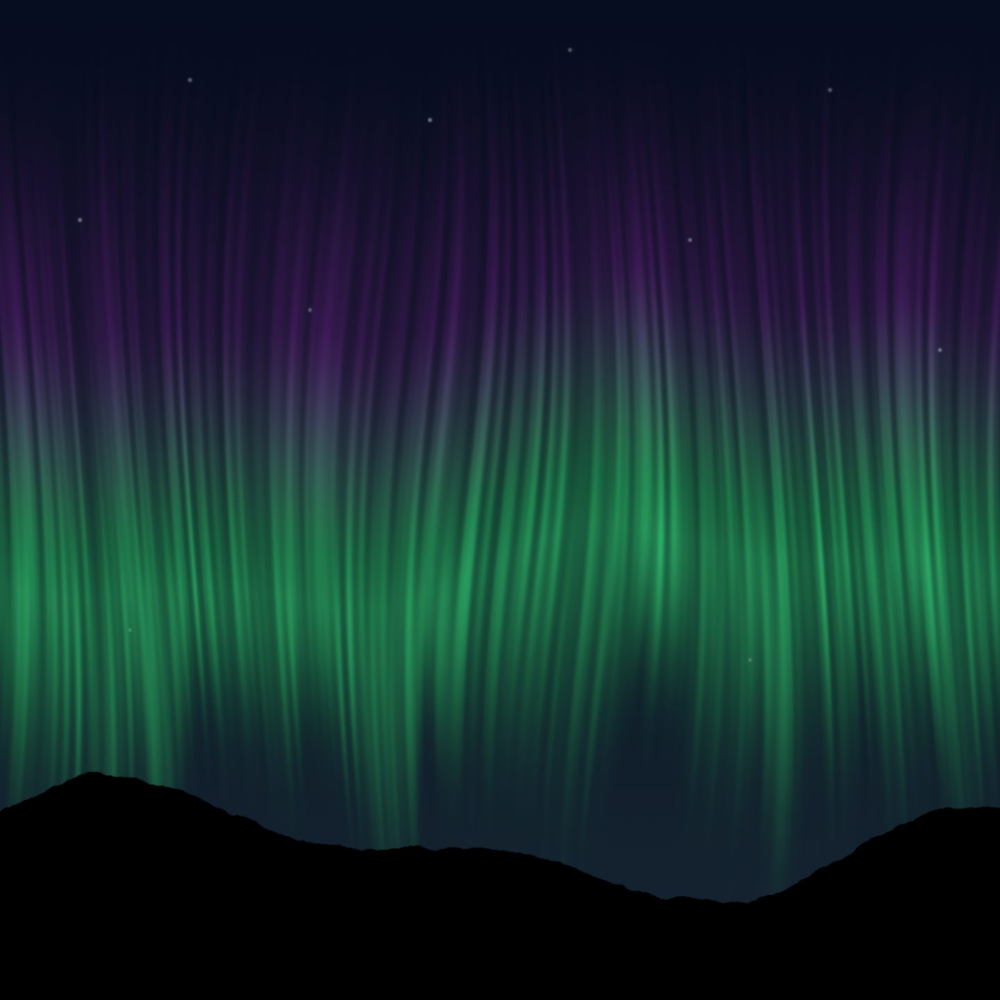
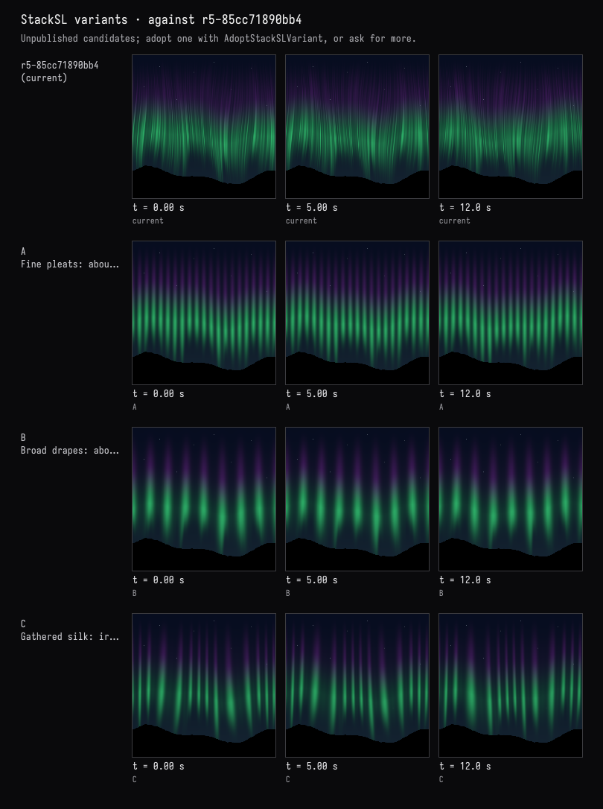

Field · AI4 / An aurora over hills / turn 04
Folds like fabric, three ways
The recorded exchange: the request, the tool activity, every image the tools returned to the model, and its reply. Expand tool activity to read the steps; open an image to see it full size.
You
Make the curtain hang more like fabric, with vertical folds. Try two or three versions and I'll choose.
Tool activity · 5 steps
Starting AI conversation
InspectStackSLStudy finished (1 ms)
CaptureRenderWindowRequest finished (30 ms)
TryStackSLVariants finished (1925 ms)
Completed


AI4 · gpt-6-astra / openai
Three checked previews are ready; nothing has been applied.
- A — Fine pleats: closely spaced, straight vertical folds with subtle sway.
- B — Broad drapes: wider, softly rounded folds with deeper shadowed valleys.
- C — Gathered silk: unevenly spaced folds that bunch together and billow toward the bottom.
All retain the green-to-violet palette, fading tips, stars, and still black hills. I checked each at 0, 5, and 12 seconds.
Which would you like: A, B, or C?